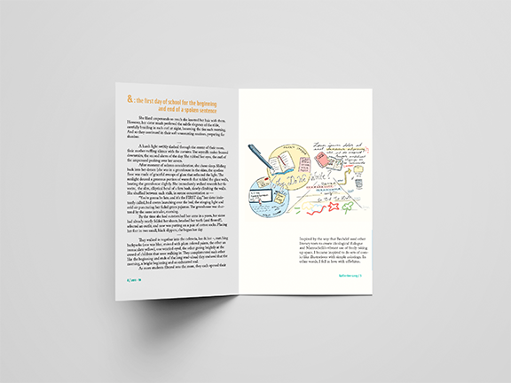
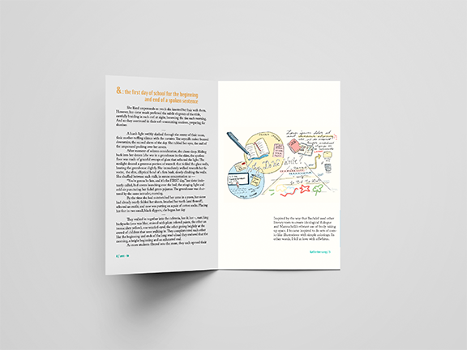

I love the excessive documentation of things, to remember insignificant details of the creases in my pillow in the morning or the smell of bitter autumn in Chicago.
This is my proposed 4 year long project, where the goal is just to "make a thing, because I make things". I design the volume in the April-May of the end of the school semester, where I select a few of the things I've made into a book. One of the things I want to emphasize is the celebration of creation, no matter how (un)refined. Thus, most of the work is casual play, from silly unedited vignettes to sketches of peoples' shoes that I had done during lecture. Doing freelance, I rarely produce works that are purely me, so this is my opportunity every year to reflect upon what I've been and how to show it visually.
 

Selected pages from zero-to, works from sophomore year.


Selected pages from oh-one, works from freshman year.